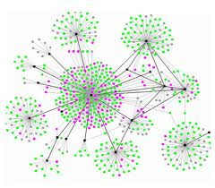
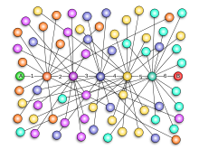
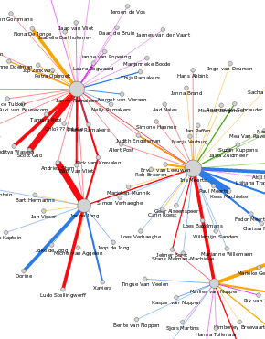

Menu
Deelnemers

Hoe ziet uw sociale netwerk eruit?
De Netwerk Scan van Stichting Zelforganisatie heeft als doel om uw netwerk in kaart te brengen en u inzicht te geven in uw sociale verbondenheid.

INQDe Netwerk Scan berekent de Individuele Netwerk Quotiënt (INQ) van uw netwerk. Dit geeft een maat voor uw sociale verbondenheid. |
NetwerkDe Netwerk Scan geeft inzicht in hoe uw sociale netwerk is opgebouwd. U staat zelf centraal en heeft contacten uit verschillende deelnetwerken. |
StartVul nu de Netwerk Scan in! |
Hoe werkt het?
In de Netwerk Scan meten we met hoeveel mensen uit verschillende netwerken u regelmatig contact hebt. Dit resulteert in uw persoonlijke Individuele Netwerk Quotiënt (INQ). De INQ is dus een maat voor uw maatschappelijke verbondenheid. Een hogere waarde geeft aan dat u meer connected bent dan iemand met een lagere waarde. Als u de Netwerk Scan zo volledig mogelijk invult krijgt u een zo goed mogelijk beeld van uw netwerk.
Achtergrondinformatie
De Netwerk Scan van Stichting Zelforganisatie is gebaseerd op een aantal noties uit de wetenschap: de theorie omtrent Scale Free networks, The Strength of Weak Ties en het Small World principe. Deze worden hieronder kort toegelicht. Vervolgens geven we u informatie over de praktische toepasbaarheid van uw INQ.Theorie
Scale Free networks
 Netwerken die zich lenen voor zelforganisatie vertonen in de praktijk alle dezelfde kenmerken. Dit is niet alleen zichtbaar bij mensen en het internet maar ook bij vogels, vissen en insecten. Albert-László Barabási en anderen hebben aangetoond dat in een Scale Free netwerk de meeste mensen relatief weinig (verschillende soorten) contacten hebben, en een paar mensen heel veel. De mensen met zeer veel verschillende contacten worden 'hubs' genoemd; zij houden het netwerk bij elkaar en vormen bruggen tussen de verschillende deelnetwerken i .
In hoeverre is uw netwerk scale free? Dat inventariseren we in deze Netwerk Scan. De scan is een momentopname van uw netwerk, een 'foto' van uw netwerk. Als u de scan over een jaar nogmaals invult, is uw netwerk ongetwijfeld veranderd en heeft het meer of minder het karakter van een scale free network gekregen. Dit kunt u bewust doen door contact te leggen met 'hubs' of door nieuwe deelnetwerken aan te leggen.
Small World
 Deze theorie verwierf bekendheid door het experiment van Stanley Milgram waarin werd gemeten via hoeveel mensen een brief een bepaalde persoon bereikte. In het experiment bleek dat de brief gemiddeld zes personen nodig had om de geadresseerde te bereiken. Hieruit is de conclusie getrokken dat je slechts zes stappen verwijderd bent van een willekeurige persoon, waar ook ter wereld. Deze notie staat bekend als de 'six degrees of separation'.
Strength of Weak Ties
Marc Granovetter toonde in 1974 aan dat mensen veel vaker een nieuwe baan of relatie krijgen via mensen die ze weinig zien (de 'weak links') dan via goede vrienden. Dit komt doordat je vrienden in de regel sterk op je lijken, hetzelfde gedrag vertonen en zich in dezelfde netwerken begeven. Zwakke connecties zitten vaak in andere netwerken en kunnen daardoor relatief meer bijdragen aan de diversiteit van je netwerk. Je hebt deze mensen dus minstens zo hard nodig als goede vrienden die je vaak ziet.
Praktische toepassing
Bij de Netwerk Scan gaan we niet uit van de groep waarin u zit (familie, vriendenkring) maar kiezen we voor de verschillende rollen die u heeft als ouder, vriend of collega. Bijvoorbeeld: wanneer we kiezen voor een indeling in groepen, dan kunt u zo alle bloedlijnen die u heeft invullen. Echter, wanneer u bijvoorbeeld met uw broer een bedrijf heeft opgericht, kan het zijn dat u vaker contact i heeft met uw broer als 'zakelijk partner' dan als 'familielid'. Aangezien het ons gaat om de frequentie i van het contact is het zakelijk contact met uw broer voor ons hier belangrijker dan de mate waarin u elkaar in familieverband ziet.
Wat levert de Netwerk Scan u op?
De Netwerk Scan resulteert in een Individuele Netwerk Quotiënt (INQ) i en een visualisatie van uw netwerk. De INQ is dus een maat voor uw maatschappelijke verbondenheid. Een hogere INQ geeft aan dat u meer verbonden bent dan iemand met een lagere INQ. De INQ is uitsluitend bedoeld om u inzicht te geven in de opbouw van uw netwerk op dit moment en geeft geen waardeoordeel. Er is geen 'goed' of 'fout'. U kunt het zien als een soort 'foto' van uw netwerk. Over een jaar kan uw netwerk er heel anders uitzien, bijvoorbeeld als u van baan bent gewisseld of nieuwe vrienden heeft gemaakt. Als u de Netwerk Scan regelmatig invult ontstaat een 'film' van uw netwerk, die realistischer is dan de momentopname.
Wat kunt u ermee?
Uw INQ geeft een indruk van uw eigen zelforganiserend vermogen. Nu u weet hoe uw netwerk in elkaar zit, kunt u uw zelforganiserend vermogen verbeteren door bewust aan de slag te gaan met uw netwerk. U kunt bijvoorbeeld contact zoeken met de 'hubs' i in uw netwerk als u op zoek bent naar een nieuwe baan. Of u kunt het netwerk van iemand anders helpen uitbreiden om te voorkomen dat hij of zij eenzaam wordt. Een uitgebreid, gevarieerd netwerk blijft namelijk langer bestaan (het is robuuster) dan een beperkt netwerk van mensen die op elkaar lijken. Ten slotte is het goed om te weten dat mensen met een hogere INQ in het algemeen meer kans hebben op nieuwe connecties. Kijk maar naar social media: als je op Facebook of Twitter veel vrienden of volgers hebt, krijg je er veel sneller nieuwe vrienden bij dan wanneer je weinig vrienden hebt. Daarnaast hebben mensen met een hoger INQ meer kans op een nieuwe baan of een nieuwe relatie. Mark Granovetter heeft dit overtuigend beschreven in The Strength of Weak Ties.
Heeft u hier vragen over? Wij helpen u graag!
Gegevens
Voordat u uw gegevens kunt invullen of bekijken, dient u in te loggen.
Privacy
Maak een keuze voor de privacy instellingen van uw gegevens.
Gegevens importeren (optioneel)
Om uw netwerk makkelijker te kunnen invullen, kunt u uw vrienden en persoonlijke gegevens van Facebook importeren. Deze gegevens worden straks gebruikt om:
- Automatisch uw persoonlijke gegevens in te vullen.
- De namen van uw contacten automatisch aan te vullen bij het invullen van uw netwerk.
- Te bepalen wie uw contacten zijn en uw gegevens mogen bekijken, in het geval dat u dit als privacy instelling hebt gekozen.
|
|
Er zijn {{countContacts('facebook')}} vrienden uit Facebook geïmporteerd. We konden geen contacten uit Facebook voor u importeren. | Dit kan even duren. Een moment geduld alstublieft... annuleren |
Wie bent u?
Vul uw algemene gegevens in.
| Naam | |
| Leeftijd | |
| Geslacht | |
| Beroep |
Hoe vult u de Netwerk Scan in?
Uw netwerk bestaat uit verschillende deelnetwerken, zoals familie, vrienden, buren, sportmaatjes, etc. Hierbij gaat het om de verschillende rollen die u heeft als collega, vriend of ouder. Een voorbeeld: wanneer u samen met uw broer een bedrijf heeft, kan het zijn dat u vaker zakelijk contact heeft dan 'familiecontact'. Uw broer deelt u dus in het netwerk 'collega's' in.
U geeft zelf aan hoe vaak u met personen uit de verschillende deelnetwerken contact heeft, bijvoorbeeld dagelijks, wekelijks of jaarlijks. Alle vormen van contact tellen mee, dus ook telefoongesprekken, e-mails, sms-jes, ansichtkaarten, tweets, etc.
{{domain.name}}
Vul de namen van uw {{domain.name.toLowerCase()}} in, en geef aan hoe intensief contact u met elk van hen hebt.
| Naam | Frequentie | |
| × | ||
Deelnetwerk toevoegen
Kies een deelnetwerk om uw contacten in te voeren. U hoeft alleen contacten in te voeren bij deelnetwerken die voor u relevant zijn. Mist u een netwerk? Vul dit dan in bij 'Overig'. Bent u klaar? Klik dan op 'Volgende'.
INQ
In deze Netwerk Scan meten we hoeveel verschillende netwerken u op dit moment hebt en met hoeveel mensen u daarbinnen geregeld contact hebt. Dit resulteert in een waarde: uw persoonlijke Individuele Netwerk Quotiënt (INQ). De INQ is dus een maat voor uw maatschappelijke verbondenheid. Een hogere waarde geeft aan dat u meer verbonden bent dan iemand die lager scoort. U haalt de maximale waarde van 1.0 als u dagelijks spreekt met vier of meer mensen uit vier of meer verschillende netwerken.
Uw Individuele Netwerk Coëfficiënt (INQ) is: {{currentInq}}
Klik hier voor een visualisatie van uw netwerk.
Wat kunt u met deze informatie? Lees meer op de pagina Achtergrondinformatie.
Geen toegang
U hebt geen toestemming om de gegevens van {{ current.name || 'deze gebruiker' }} te bekijken.
U kunt zijn of haar gegevens bekijken wanneer:
- {{ current.name || 'deze gebruiker' }} heeft aangegeven dat iedereen zijn of haar gegevens mag inzien.
- {{ current.name || 'deze gebruiker' }} heeft aangegeven dat relaties zijn of haar gegevens mogen inzien, en hij of zij u als relatie heeft ingevuld met uw emailadres ({{user.email}}).
Uw netwerk in kaart
De netwerkvisualisatie toont een plaatje van uw sociale netwerk op dit moment. Al uw contacten worden weergegeven. Wanneer deze contacten de Netwerk Scan ook hebben ingevuld en deze voor u toegankelijk is, worden ook hun contacten weergegeven.
De dikte van de lijn tussen twee personen geeft de intensiteit van het contact aan - hoe dikker de lijn is, des te intensiever is het contact. De lijnkleur geeft aan in welke rol u contact heeft met iemand anders (in welk 'deelnetwerk').
Voordat u uw gegevens kunt invullen of bekijken, dient u in te loggen.
{{network.name}}
Individuele Netwerk Coëfficiënt (INQ): {{network.inq}}